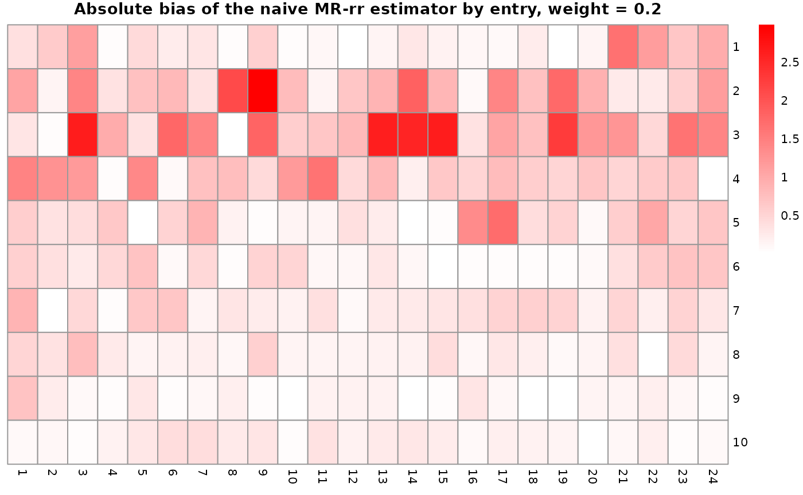
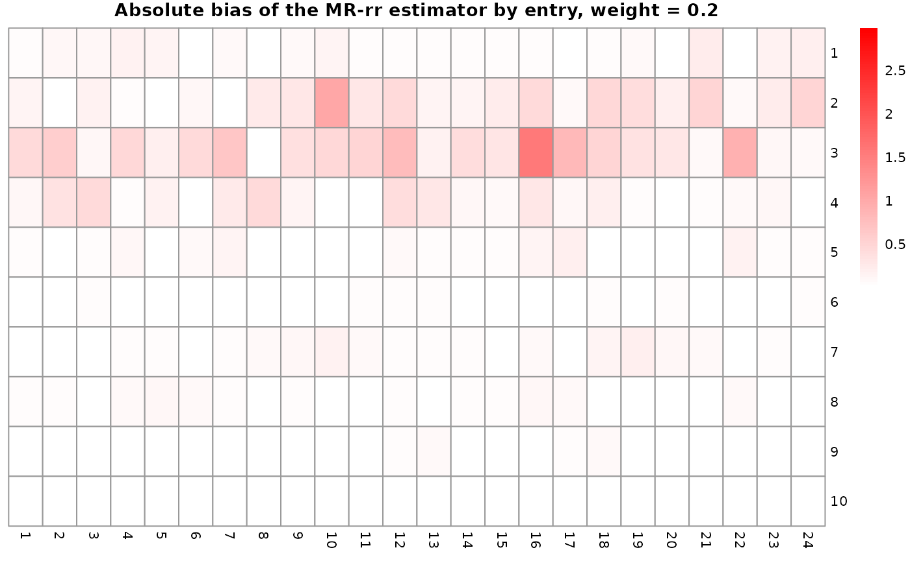
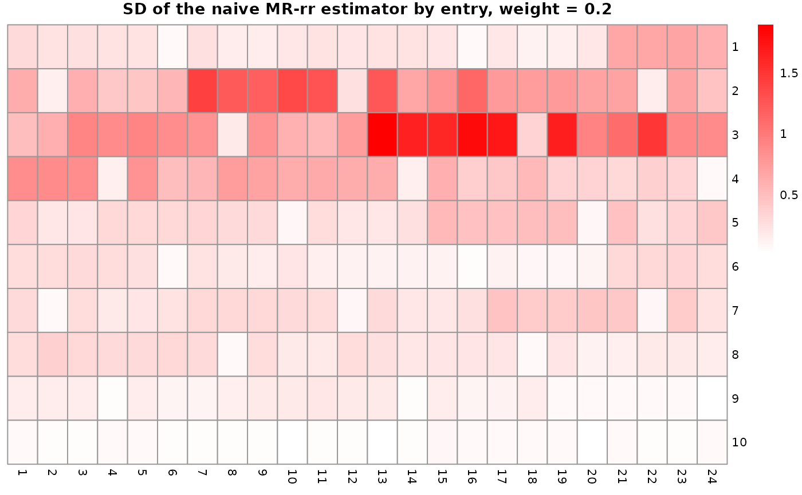
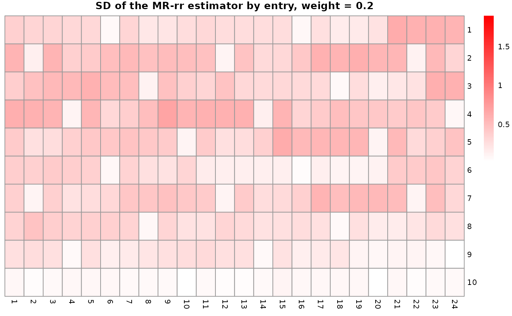

Small demo of the MR.rr package
Yuexiang Peng, Zhilong Zhang
2024-11-21
MR.rr.RmdThis is a vignette for our MR-rr package. This package contains three estimators, including the naive MR-rr estimator, the MR-rr estimator, and the the MR-rr estimator with regularization. The package also contains functions to perform simulation to test the estimators.
The usage of the estimator function
First, we will give a example on how to use the estimator in practice with generated sample data.
library(MR.rr)
set.seed(123)
# Generate the data
pz = 100 # the number of SNPs
px = 10 # the number of exposures
py = 10 # the number of outcomes
rank = 5 # the rank of the causal effect matrix C
Gamma = matrix(rnorm(pz * py), pz, py) # regression coefficient matrix of outcomes on SNPs
gamma = matrix(rnorm(pz * px), pz, px) # regression coefficient matrix of exposures on SNPs
Sigma_X = matrix(rnorm(px * px), px, px)
Sigma_X = Sigma_X %*% t(Sigma_X) # use the average SE matrix of gamma across all SNPs in practice
Sigma_Y = matrix(rnorm(py * py), py, py)
Sigma_Y = Sigma_Y %*% t(Sigma_Y) # use the average SE matrix of Gamma across all SNPs in practice
C_hat_naive = mr_rr_naive(Y=Gamma, X=gamma, r=rank, W=solve(Sigma_Y))$AB
print("This is the estimated causal effect matrix C with rank 5 by the naive MR-rr estimator:")
#> [1] "This is the estimated causal effect matrix C with rank 5 by the naive MR-rr estimator:"
print(C_hat_naive)
#> [,1] [,2] [,3] [,4] [,5]
#> [1,] 0.047092730 -0.1634795260 0.08176922 0.143962468 0.0877066857
#> [2,] 0.008620659 -0.0831265385 -0.06071926 -0.056823285 0.1107032865
#> [3,] -0.083129503 -0.0050750851 -0.09064111 -0.001882808 -0.1563634926
#> [4,] 0.238255947 -0.0719393083 0.05890658 0.053790568 0.1147569345
#> [5,] 0.044344026 0.0968665121 0.03025975 0.040032090 -0.0420447916
#> [6,] 0.056512484 -0.0003290531 0.02957345 0.027461754 -0.1687938592
#> [7,] 0.002815842 0.1895144418 -0.09303392 0.028562107 -0.0004858837
#> [8,] 0.105159045 -0.0785223702 0.19827403 0.008092094 -0.0477872491
#> [9,] -0.077893578 -0.0179396951 0.13715885 -0.045445425 0.0549699273
#> [10,] 0.256508760 -0.1269180241 -0.15879027 0.042333714 -0.0233843543
#> [,6] [,7] [,8] [,9] [,10]
#> [1,] 0.111429696 -0.022720606 0.110639976 0.101277877 0.05462868
#> [2,] -0.125931820 -0.177608200 -0.012557434 -0.009149651 -0.07611947
#> [3,] -0.057814975 0.003372294 -0.026220515 0.028714823 0.03379240
#> [4,] 0.129462773 -0.046218646 0.018741473 -0.004124733 0.07423671
#> [5,] 0.094388289 0.130419748 -0.009935989 -0.016138653 0.08079067
#> [6,] 0.118530346 0.091950693 -0.005996770 0.013991857 0.07515206
#> [7,] -0.026962234 0.108751597 -0.062354295 -0.041615549 0.11691259
#> [8,] 0.210420321 0.073197176 0.059572275 0.006618784 -0.03677907
#> [9,] 0.029446431 0.026150396 0.051062980 -0.010325912 -0.14143580
#> [10,] -0.005343873 -0.178393280 -0.057345179 0.019867529 0.16748060
C_hat = mr_rr(Y=Gamma, X=gamma, r=rank, Sigma_X=Sigma_X, W=solve(Sigma_Y))$AB
print("This is the estimated causal effect matrix C with rank 5 by the MR-rr estimator:")
#> [1] "This is the estimated causal effect matrix C with rank 5 by the MR-rr estimator:"
print(C_hat)
#> [,1] [,2] [,3] [,4] [,5]
#> [1,] -2.443153e-05 -0.01098050 0.001571977 -0.010410645 0.004153320
#> [2,] -1.292330e-01 -0.22422575 0.163909734 -0.366727922 0.445155319
#> [3,] -1.636965e-02 0.04470537 0.013380929 0.005320086 0.045016525
#> [4,] -1.183138e-02 0.02329179 0.011693258 -0.002021781 0.039543013
#> [5,] 4.703109e-02 0.10783074 -0.063400878 0.154798903 -0.170628860
#> [6,] 3.597779e-03 -0.11190116 0.007606195 -0.065931773 0.007525609
#> [7,] 4.566079e-03 0.25657540 -0.035290044 0.203360787 -0.077434396
#> [8,] 9.110504e-02 0.12876381 -0.114030901 0.243264142 -0.315937785
#> [9,] -6.256683e-02 -0.13630580 0.083816580 -0.205936536 0.227641469
#> [10,] -2.283862e-02 -0.06343240 0.032919222 -0.092702573 0.090484120
#> [,6] [,7] [,8] [,9] [,10]
#> [1,] 0.009123475 -0.00635172 -0.004874002 0.0037227578 -0.00299811
#> [2,] 0.061201771 -0.18221584 -0.053374176 0.1358796376 0.15804019
#> [3,] -0.069271101 0.02970941 0.030143310 0.0003307395 0.05739294
#> [4,] -0.055393071 0.02137561 0.016854418 0.0064547500 0.04060412
#> [5,] -0.057166935 0.09528793 0.033273174 -0.0609189918 -0.04167971
#> [6,] 0.099062367 -0.06660969 -0.059618965 0.0244162244 -0.06216718
#> [7,] -0.226885536 0.16732317 0.124279161 -0.0760565667 0.10094165
#> [8,] -0.014683258 0.11306126 0.022472446 -0.0948267484 -0.12782601
#> [9,] 0.065113395 -0.11616381 -0.038773624 0.0785509965 0.06470333
#> [10,] 0.035481172 -0.04943013 -0.018977953 0.0339767811 0.02313105
C_hat_r = mr_rr_regularized(Y=Gamma, X=gamma, r=rank, Sigma_X=Sigma_X,
regularization_rate = 1e-13, W=solve(Sigma_Y))$AB
print("This is the estimated causal effect matrix C with rank 5 by the MR-rr estimator with regularization:")
#> [1] "This is the estimated causal effect matrix C with rank 5 by the MR-rr estimator with regularization:"
print(C_hat_r)
#> [,1] [,2] [,3] [,4] [,5]
#> [1,] -2.443153e-05 -0.01098050 0.001571977 -0.010410645 0.004153320
#> [2,] -1.292330e-01 -0.22422575 0.163909734 -0.366727922 0.445155319
#> [3,] -1.636965e-02 0.04470537 0.013380929 0.005320086 0.045016525
#> [4,] -1.183138e-02 0.02329179 0.011693258 -0.002021781 0.039543013
#> [5,] 4.703109e-02 0.10783074 -0.063400878 0.154798903 -0.170628860
#> [6,] 3.597779e-03 -0.11190116 0.007606195 -0.065931773 0.007525609
#> [7,] 4.566079e-03 0.25657540 -0.035290044 0.203360787 -0.077434396
#> [8,] 9.110504e-02 0.12876381 -0.114030901 0.243264142 -0.315937785
#> [9,] -6.256683e-02 -0.13630580 0.083816580 -0.205936536 0.227641469
#> [10,] -2.283862e-02 -0.06343240 0.032919222 -0.092702573 0.090484120
#> [,6] [,7] [,8] [,9] [,10]
#> [1,] 0.009123475 -0.00635172 -0.004874002 0.0037227578 -0.00299811
#> [2,] 0.061201771 -0.18221584 -0.053374176 0.1358796376 0.15804019
#> [3,] -0.069271101 0.02970941 0.030143310 0.0003307395 0.05739294
#> [4,] -0.055393071 0.02137561 0.016854418 0.0064547500 0.04060412
#> [5,] -0.057166935 0.09528793 0.033273174 -0.0609189918 -0.04167971
#> [6,] 0.099062367 -0.06660969 -0.059618965 0.0244162244 -0.06216718
#> [7,] -0.226885536 0.16732317 0.124279161 -0.0760565667 0.10094165
#> [8,] -0.014683258 0.11306126 0.022472446 -0.0948267484 -0.12782601
#> [9,] 0.065113395 -0.11616381 -0.038773624 0.0785509965 0.06470333
#> [10,] 0.035481172 -0.04943013 -0.018977953 0.0339767811 0.02313105The usage of the run_simulation function
Then, we will illustrate how to use the simulation function in this package to access the performance of our MR-rr estimator with near realistic data. To generate a reasonable simulated data, we use the GWAS-Lipid data incorporated in the package to generate the true parameters and a rank 5 causal effect matrix C from 24 dimension exposures to 10 dimension outcomes. Then we will simulate the data with the true parameters and run the naive MR-rr estimator and MR-rr estimator with regularization to compare the performance with respect to true C.
sim_result = run_simulation(regularized = TRUE, regularization_rate = 1e-13)
bias_naive_MRrr = sim_result[[1]]
bias_MRrr_regularized = sim_result[[2]]
print("This is a demo of the output format of the run_simulation function:")
#> [1] "This is a demo of the output format of the run_simulation function:"
str(bias_naive_MRrr)
#> List of 5
#> $ 1 : num [1:240, 1:100] -1.088 -1.123 0.587 -1.93 2.225 ...
#> $ 0.5 : num [1:240, 1:100] 0.0991 0.4033 0.5259 0.2762 -0.3399 ...
#> $ 0.2 : num [1:240, 1:100] 0.0486 0.3397 0.9793 0.4412 -0.067 ...
#> $ 0.1 : num [1:240, 1:100] 0.0675 0.1477 -0.1559 -0.4915 -0.2613 ...
#> $ 0.05: num [1:240, 1:100] 0.2732 -0.1623 -0.429 -0.0717 0.1762 ...
print("This is a summary of the entrywise bias of the naive MR-rr estimator:")
#> [1] "This is a summary of the entrywise bias of the naive MR-rr estimator:"
summary(unlist(bias_naive_MRrr))
#> Min. 1st Qu. Median Mean 3rd Qu. Max.
#> -16.395973 -0.287819 0.001459 0.003567 0.284491 16.665919
print("This is a summary of the entrywise bias of the MR-rr estimator with regularization:")
#> [1] "This is a summary of the entrywise bias of the MR-rr estimator with regularization:"
summary(unlist(bias_MRrr_regularized))
#> Min. 1st Qu. Median Mean 3rd Qu. Max.
#> -10.831404 -0.202926 -0.000002 -0.000607 0.200623 9.253646From a rough glance, we can see that the MR-rr estimator with regularization has a smaller bias than the naive MR-rr estimator. We can also visualize the results by plotting the boxplots of the bias and the heatmaps of the bias and standard deviation by the following functions.
The usage of the plot_boxplot function
The boxplots function takes the bias matrices of the naive MR-rr estimator and the MR-rr estimator with regularization as input and plots the boxplot of the entry-wise bias of the causal effect matrix C.
plot_boxplot(bias_naive_MRrr, bias_MRrr_regularized, weight_to_plot = "0.2",
individual_plot = TRUE, rank_by = "bias")
#> [[1]]
#> [[1]]$`(3, 4)`
#>
#> [[1]]$`(3, 7)`
#>
#>
#> [[2]]
#> [[2]]$`(4, 7)`
#>
#> [[2]]$`(4, 4)`
From the boxplot, we can see that the MR-rr estimator with regularization has a smaller bias than the naive MR-rr estimator. Then, we use the heatmap to visualize the bias and standard deviation of each entry of the estimator comapring to the causal effect C.
The usage of the plot_heatmap function
plot_heatmap(bias_naive_MRrr, bias_MRrr_regularized, weight_to_plot = "0.2")
#> $iv_strength
#> [1] 1.596501
#>
#> $mean_abs_C_entry
#> [1] 0.976197
#>
#> $mean_abs_bias_naive
#> [1] 0.4948786
#>
#> $mean_abs_bias
#> [1] 0.1135194
#>
#> $mean_sd_naive
#> [1] 0.3057215
#>
#> $mean_sd
#> [1] 0.3712203We see that when the IV strength is about 1.5, the MR-rr estimator with regularization has a smaller bias and similar standard deviation comparing to the naive MR-rr estimator.
The usage of the nonpara_bootstrap function
Finally, we test whether the bootstrap 95 percent confidence interval covers the true causal effect matrix C with about 95% probability.
print("The bootstrap coverage rate is:")
#> [1] "The bootstrap coverage rate is:"
nonpara_bootstrap(me_weight = 1, regularized = TRUE, regularization_rate = 1e-13)
#> [1] 0.93775